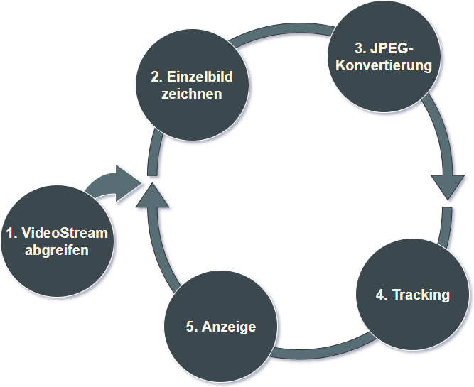
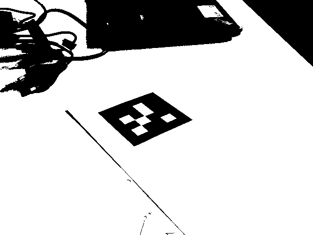
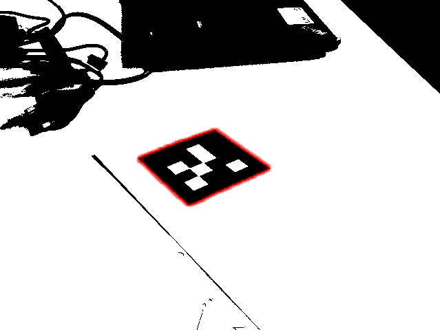
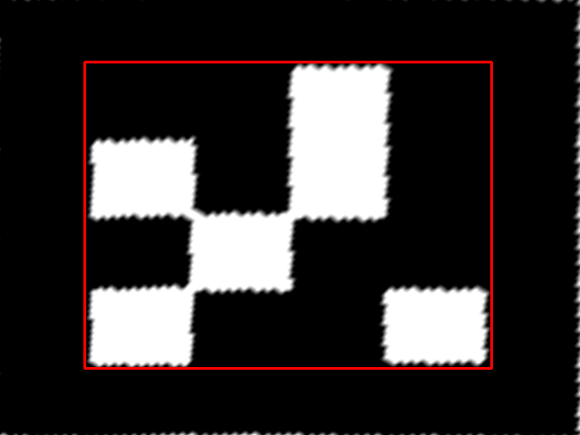
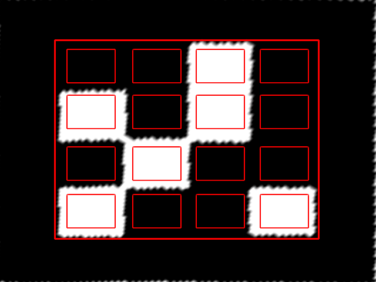
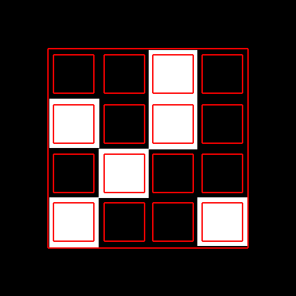

Entwicklung eines
Augmented Reality-Frameworks
im industriellen Umfeld
Gliederung
Marktcheck
Einblick
Use Case
JSARToolkit
JavaScript-Port von ARToolkit
Marker-Tracking ( Template Matching )
kostenlos, LGPLv3
JS-Aruco
JavaScript-Port von Aruco
Marker-Tracking ( Binary Matching )
kostenlos, MIT
Awe.js
Web-basiert, Code optional
Marker-Tracking, GPS
19 $ pro Monat + Pakete
Einblick
VideoStream abgreifen
navigator.mediaDevices.getUserMedia({
video: {
height: 480,
width: 640,
frameRate: 30
},
audio: false
});
Einzelbild zeichnen
var captureElement = document.getElementById( 'capture' );
var ctx = captureElement.getContext( '2d' );
ctx.drawImage( videoElement, 0, 0 );
JPEG-Konvertierung
var b64Str = captureElement.toDataURL( 'image/jpeg', 0.75 )
.split( ',' )[1];
var binStr = atob( b64Str );
var binArray = new Array( binStr.length );
for( var i = 0, max = binStr.length ; i < max ; i++ )
binArray[ i ] = binStr.charCodeAt( i );
Tracking
Thresholding
Tracking
Contour filtering
Tracking
Bits extraction

 